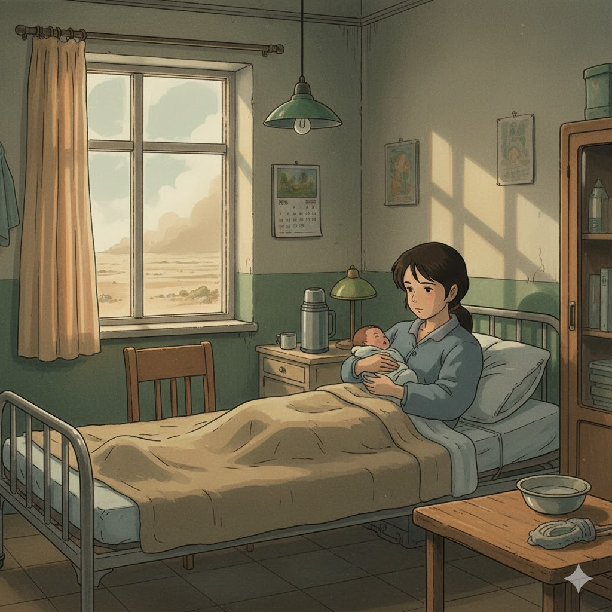

1997 · 生命的起点
1997年，我在南疆出生。那时候的冬天很冷，妈妈爸爸辛苦啦。

每一个脚印，都通向更好的自己
1997年，我在南疆出生。那时候的冬天很冷，妈妈爸爸辛苦啦。
上幼儿园了，分离焦虑让我每天嚎哭。我时常伸出食指对着母亲：意思是，你一分钟以后就要来接我。

小学第一次期末考了100分。父亲在做木工，身边满是木屑，我骄傲地向他展示我的成绩。
初中的太阳很晒，学校里到处是土路，环形跑道很破旧。那是汗水与尘土交织的青春。

在市里念高中。记得校门口香气扑鼻的炸串，也记得那张总也考不及格、让人头疼的物理试卷。
去南方水乡念大学。满眼郁郁葱葱，空气湿润，建筑温婉。这里的一切对我来说都是新鲜的。

2019年，在乌鲁木齐工作。面对看不完的图纸和表格，在厚雪覆盖的寒冬，我经常买打折蔬菜，一个人咬牙坚持考下了一级造价工程师证。
杭州滋养了我，有西湖徒步的欢愉，也有高压加班和独自做肠胃镜时难以忘记的孤独。
“现在，我还在不断地发掘自己，”
“也许我有更多潜力？”